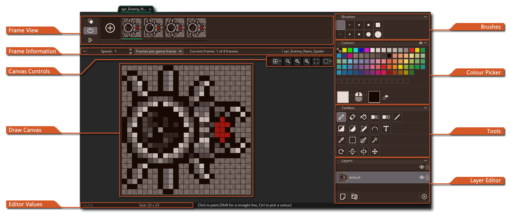
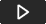
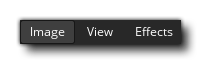
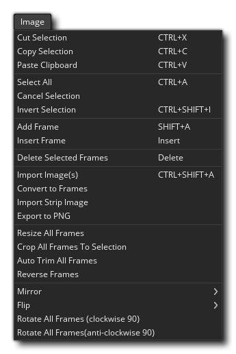
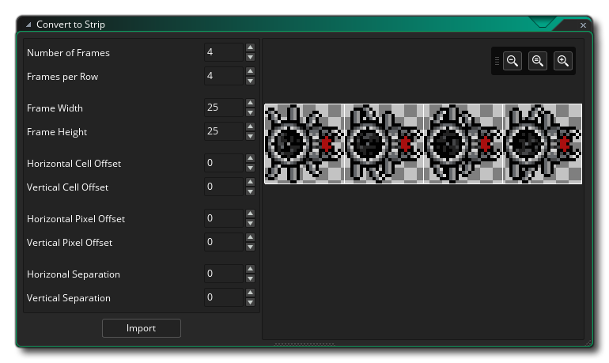

Im Bildeditor können Sie Ihre eigenen Sprites erstellen oder diejenigen bearbeiten, die Sie zuvor importiert oder erstellt haben. Wenn Sie zuvor bereits ein Bildwerkzeug verwendet haben, sollte Ihnen das bekannt sein, aber es gibt einige Dinge, die Sie beachten sollten, wenn Sie den GameMaker Studio 2- Bildeditor verwenden, die nicht sofort offensichtlich sind:
- Wenn Sie mehrere Frames erstellen, können Sie sie animieren, während sie animieren! Wenn Sie also die Wiedergabetaste in der Rahmensteuerungsleiste drücken und dann einen Pinsel auswählen und mit dem Zeichnen im Editorfenster beginnen, sehen Sie, dass die Rahmen im Editor animiert werden und was Sie zeichnen, wird dem entsprechenden hinzugefügt Rahmen in diesem Moment. Sie können mit verschiedenen Frameraten experimentieren, bis Sie etwas gefunden haben, das Ihnen gefällt, aber sobald Sie wissen, wie das funktioniert, werden Sie in kürzester Zeit dynamische Sprites und Effekte erstellen.
- Sie können die Registerkarte Image Editor vom Hauptarbeitsbereichsfenster in ein eigenes Fenster ziehen. Dies kann nützlich sein, wenn Sie beispielsweise mehrere Monitore verwenden.
- Wenn Sie die Kopierfunktionen verwenden, um z. B. eine Auswahl eines Bildes zu kopieren, wird die kopierte Auswahl Ihrer Pinselliste hinzugefügt. Dies bedeutet, dass Sie einen Teil eines Bildes auswählen und es dann in den übrigen Malwerkzeugen verwenden können, um Linien, Polygone oder einfach nur frei zu zeichnen. Der Pinsel kann skaliert und mit einer Farbe gemischt werden. Beachten Sie, dass die Einfügefunktion nicht für die interne Verwendung im Editor gedacht ist, da alles, was Sie kopieren, der Malwerkzeugliste hinzugefügt wird und daher zum Einfügen auf diese Weise ausgewählt werden kann. Stattdessen fügen Sie einfach etwas aus einem externen Programm ein und fügen es in den Bild-Editor ein.
- Dank des praktischen Ebeneneditors können Sie mehrere Ebenen für jedes Sprite erstellen. Diese Ebenen können geordnet und sogar in Ordnern platziert werden, um das Erstellen komplexerer Bilder zu vereinfachen.
Dies sind nur einige der fortgeschrittenen Funktionen, die der Bildbearbeitungsprogramm bietet. Um den gesamten Funktionsumfang zu erfahren, lesen Sie bitte die folgenden Punkte, die die Funktionen jedes Teils des Editors detailliert beschreiben:
In diesem Teil des Fensters werden die Frames in der Reihenfolge angezeigt, in der sie animiert werden. Sie können auf die Schaltfläche (+) klicken, um weitere Frames hinzuzufügen - oder verwenden Sie das Menü "Image" - und Sie können auch auf eines der Symbole klicken und ziehen Rahmen, um seine Position entlang der Zeitlinie zu ändern. Oben links in der Rahmenansicht können Sie Onion Skinning einschalten
Dies bedeutet, dass Sie in einem einzelnen Frame einer beliebigen Sprite-Animation auswählen können, ob Sie einen der vorhergehenden oder nachfolgenden Frames als halbtransparente Ebene unter dem Bildrahmen sehen möchten, den Sie gerade bearbeiten. Das Tolle daran ist, dass jedes Bild etwas heller gezeichnet ist als das letzte, so dass Sie sehen können, wie die Animation von Bild zu Bild fortschreitet, während Sie das nächste zeichnet. Wenn Sie dies aktivieren, werden zusätzliche Steuerelemente für die Rahmen angezeigt, auf die Sie klicken und ziehen können, um die Anzahl der vorhergehenden Rahmen sowie die Anzahl der folgenden Rahmen festzulegen.
Unter der Schaltfläche Onion Skin haben Sie die Schaltfläche Loop Control
wird verwendet, um festzulegen, ob das Sprite loops (geht zurück zu Frame 1, wenn der letzte Frame erreicht ist) oder ping-pongs (geht durch die Frames rückwärts, wenn der letzte Frame erreicht ist). Die Schaltfläche "Abspielen"  Unten wird die Vorschau der Animation gestartet / gestoppt.
Sie können auf einen beliebigen Rahmen klicken, um ihn zur Bearbeitung auszuwählen, und ein ausgewählter Rahmen hat das Symbol Löschen
in der oberen Ecke, die Sie anklicken können, um den Rahmen aus dem Sprite zu entfernen. Sie können auch klicken
/
+
auf mehrere Frames, um sie zusammen auszuwählen. In diesem Fall werden alle ausgewählten Frames gelöscht, wenn Sie auf das Symbol Löschen klicken.
Diese Leiste enthält die Frame-Steuerelemente. Hier können Sie über das Eingabefeld links die Geschwindigkeit einstellen, mit der die Animationsframes abgespielt werden sollen. Die Frame-Geschwindigkeit kann entweder auf "Frames pro Sekunde" oder "Frames pro Spiel-Frame" basieren. Die Gesamtzahl der verfügbaren Bilder wird rechts neben dem aktuell ausgewählten Bild angezeigt. Sie können diese Leiste ausblenden (ausblenden), indem Sie auf die Schaltfläche klicken Symbol auf der linken Seite. Beachten Sie, dass der hier für die Animationsgeschwindigkeit verwendete Wert auch die Art und Weise festlegt, wie das Sprite in einem Spiel animiert wird, entweder als Sprite-Objekt auf einer Ebene oder als einem Objekt zugewiesenes Sprite, obwohl Sie dies zur Laufzeit mit ändern können die entsprechenden Funktionen und Variablen.
Die Canvas-Steuerelemente behandeln verschiedene Aspekte der Anzeige des Haupt-Zeichenbereichs und seines Inhalts. Die Optionen sind:
- Canvas-Raster umschalten
: Dadurch wird das Canvas-Raster ein- und ausgeschaltet. Dies ist ein Raster, das GameMaker Studio 2 über den Hauptbereich zeichnet, um es in Abschnitte zu unterteilen, und standardmäßig auf 1 Pixel festgelegt ist. Wenn Sie jedoch auf das Symbol für das Grid-Menü klicken
Sie werden die Rasteroptionen öffnen:
Mit diesen Optionen können Sie Gitterfarbe und Alpha sowie die Zellenwerte für das Gitter entlang der X- und Y-Achse festlegen. Sie haben hier auch eine Option zum Aktivieren oder Deaktivieren der Rasterfangfunktion (standardmäßig deaktiviert).
- Steuerelemente für den Leinwandzoom
: Diese Schaltflächen steuern die aktuelle Leinwand-Zoomstufe. Sie können die Ansicht vergrößern oder verkleinern und auf die Schaltfläche klicken
Mit der Schaltfläche wird die Leinwand auf 1: 1 zurückgesetzt, während das Bild bearbeitet wird. Beachten Sie, dass Sie mit der Taste auch ein- und auszoomen können
und drücken
um den gesamten Raumbereich in den aktuellen Arbeitsbereich des Editors einzupassen (dies wird je nach Bedarf vergrößert und verkleinert).
- Leinwand teilen
: Wenn Sie auf diese Schaltfläche klicken, wird zwischen der horizontalen und vertikalen Teilung der Leinwand umgeschaltet, wobei die Leinwand in einer einzigen Leinwand bleibt. In der geteilten Canvas-Ansicht hat jeder Canvas einen eigenen Satz Canvas-Steuerelemente, mit denen Sie z. B. ein- und auszoomen können. Sie können beide Canvas-Bereiche bearbeiten, wobei die Änderungen in der anderen Canvas angezeigt werden. Um die Leinwandansicht zu wechseln, können Sie auf die Optionen zum Teilen klicken
Dies ist das Hauptbearbeitungsfenster für Ihre Bilder. Hier können Sie eines der Werkzeuge auf der rechten Seite anwenden, um auf der aktuell ausgewählten Ebene zu malen. Sie können mit Lack der linken oder der rechten Maustaste (und eine Farbe jeweils aus der zuweisen Farbauswahl ) und einen der Verwendung Bürste von der oberen rechten Ecke des Editor definiert. Sie können auch verwenden
+
Dieser kleine Balken im unteren Bereich zeigt die verschiedenen Werte für die Mausposition sowie Breite und Höhe der Auswahlwerkzeuge im Editor.
Hier können Sie den Pinsel auswählen, mit dem Sie malen möchten. Standardmäßig haben Sie eine Auswahl von unterschiedlich großen quadratischen und runden Pinsel zu verwenden, aber Sie können Ihre eigene Bürste leicht erstellen, die auf dem Bild durch Malerei Schicht und dann die Auswahl der Teil, den Sie möchten für den neuen Pinsel verwenden und mit
Schlüssel und es wird entfernt.
Am Anfang dieses Abschnitts befinden sich eine Anzahl oder vordefinierte Farbfelder, aus denen Sie auswählen können, und sie können der linken Seite zugewiesen werden
Sie können die Maustasten jeweils mit einem der beiden Buttons anklicken (Sie können auch die Farben zwischen den einzelnen Buttons wechseln, indem Sie auf das Pfeilsymbol neben den Farbfeldern klicken). Die ausgewählten Farben werden im Folgenden als Muster neben dem Bild der Maus gezeigt, und Sie können diese dann klicken Sie auf die Farbauswahl - Fenster zu öffnen:
In diesem Fenster können Sie die Farbe mit einem der verfügbaren Schieberegler und Gadgets definieren, oder Sie können Werte direkt für die RGBA-Werte oder HVS-Werte eingeben. Beachten Sie, dass wenn Sie doppelklicken
Sie können also eine benutzerdefinierte Farbpalette in einem Sprite-Bild erstellen und dann die Palette für ein beliebiges anderes Sprite im Ressourcenbaum festlegen oder ein Sprite-Bild öffnen und die Farbpalette von einem beliebigen anderen Sprite im Ressourcenbaum importieren.
Im Folgenden listen wir die Werkzeuge auf, die standardmäßig in GameMaker Studio 2 verfügbar sind. Beachten Sie, dass alle Werkzeuge mit der linken verwendet werden können
Dies ist das Stiftwerkzeug. Es verwendet den ausgewählten Pinsel, um in der ausgewählten Farbe für die Maustaste zu malen, und Sie können die Größe von der oberen Leiste des Bildeditors sowie das Aktivieren / Deaktivieren von Glättung (Interpolation) festlegen. Beachten Sie, dass Sie auch die Größe eines Pinsels ändern können, indem Sie die Maustaste gedrückt halten + Z dann klicken
Dies ist das Löschwerkzeug. Es verwendet den ausgewählten Pinsel, um einen Bereich beim Klicken von jeder Maustaste zu löschen. Durch Auswahl dieser Option werden der oberen Leiste des Editors zusätzliche Werkzeuge hinzugefügt, mit denen Sie den Pinsel skalieren oder das Glätten (Interpolieren) aktivieren / deaktivieren können. Dies ist das Farbeimer-Werkzeug. Dadurch wird ein Bereich des Bildes basierend auf der gewählten Alpha-Toleranz-Einstellung ausgefüllt, die Sie mit dem Schieberegler in der oberen Leiste des Editors ändern können. Dies ist das Farbentfernungswerkzeug. Wenn Sie es auswählen, können Sie auf klicken Dies ist das Farbwiedergabetool. Wenn Sie es auswählen, können Sie auf klicken Dieses Werkzeug zeichnet eine Linie zwischen zwei Punkten. Klicken Sie einmal mit einer der beiden Schaltflächen, um den ersten Punkt zu erstellen, und klicken Sie dann erneut an anderer Stelle, um einen anderen Punkt zu erstellen und sich ihnen anzuschließen. Die Linie wird mit dem ausgewählten Pinsel gezeichnet, um den Umriss zu erstellen, und Sie können einige der Pinseleigenschaften mit der oberen Leiste des Editors bearbeiten (Größe, Glättung (Interpolation) usw.). Dieses Werkzeug zeichnet entweder ein gefülltes oder ein umrissenes Rechteck. Wenn Sie oben links auf das Symbol klicken, wird es umrahmt, während rechts unten geklickt wird und wenn Sie beide benötigen, können Sie diese Option in der oberen Leiste des Bildeditors auswählen (oder verwenden und klicken Sie, um von der Mitte der Mausposition zu zeichnen.
Dieses Werkzeug zeichnet entweder eine gefüllte oder eine umrandete Ellipse. Wenn Sie oben links auf das Symbol klicken, wird es umrahmt, während rechts unten geklickt wird und wenn Sie beide benötigen, können Sie diese Option in der oberen Leiste des Bildeditors auswählen (oder verwenden Dieses Werkzeug zeichnet entweder ein gefülltes oder ein umrissenes Polygon. Wenn Sie oben links auf das Symbol klicken, wird es umrahmt, während rechts unten geklickt wird und wenn Sie beide benötigen, können Sie diese Option in der oberen Leiste des Bildeditors auswählen (oder verwenden Dies ist das Spline-Werkzeug. Es verwendet den ausgewählten Pinsel, um einen Spline zu erstellen. Sie klicken und halten die Maustaste, um einen Punkt festzulegen, und ziehen dann die Maus, um den Spline zu generieren. Lassen Sie die Maustaste los und wiederholen Sie den Vorgang, um weitere Punkte und Kurven hinzuzufügen. Der Spline wird mit dem ausgewählten Pinsel gezeichnet, der mit der oberen Leiste des Editors bearbeitet werden kann, um Größe und Glättung (Interpolation) einzustellen. Die obere Leiste hat auch eine Einstellung für Iterationen, die definieren, wie glatt der resultierende Spline ist (Liebhaberwerte werden rauer, glatter und der Standardwert ist 10). Dies ist das Texteingabetool. Es erstellt eine neue Textebene , in die Sie alles eingeben können, was Sie brauchen. Sie können die zu verwendende Schriftart sowie die Formatierung über die obere Leiste des Bildeditors festlegen. Mit dem Pipettenwerkzeug können Sie eine Farbe aus dem gerade bearbeiteten Bild abtasten. Mit diesem Werkzeug können Sie eine rechteckige Auswahl erzeugen. Sie können eine Auswahl im Menü Bild abbrechen oder drücken .
Mit diesem Werkzeug können Sie einen ausgewählten Bereich mit einem Pinsel, einschließlich benutzerdefinierter Pinsel, "malen". Es gelten die gleichen Tastenkombinationen wie für das Stift-Werkzeug. Das Zauberstab-Auswahlwerkzeug wählt basierend auf dem eingestellten Toleranzwert Bereiche derselben Farbe aus. Wenn Sie " Nur Farbe " ankreuzen, wird der Alpha-Wert nicht berücksichtigt. Sie können eine Auswahl im Menü Bild abbrechen oder drücken Dies ist das Rotationswerkzeug. Wenn Sie einen Bereich mit dem Auswahlwerkzeug ausgewählt haben, können Sie durch Klicken auf diesen Bereich den ausgewählten Bereich um einen beliebigen Betrag von 0 ° bis 360 ° drehen. Wenn Sie keinen Bereich des Bildes ausgewählt haben, können Sie den aktuellen Pinsel drehen. Um zu drehen, halten Sie einfach die linke Maustaste gedrückt Dies ist das Spiegelwerkzeug. Wenn Sie dies auswählen, wird der aktuelle Pinsel entlang der vertikalen Achse gespiegelt. Diese Option hat keinen neuen Pinsel erstellen und nur beeinflussen, wie die aktuellen Pinsel gezogen wird. Dies ist das Flip-Tool. Wenn Sie dies auswählen, wird der aktuelle Pinsel entlang der horizontalen Achse gespiegelt. Diese Option hat keinen neuen Pinsel erstellen und nur beeinflussen, wie die aktuellen Pinsel gezogen wird. Dies ist das Schwenkwerkzeug. Wenn Sie dies auswählen, können Sie auf klicken
Sie können Ebenen im Bildbearbeitungsprogramm für verschiedene Teile Ihres Bildes erstellen, und diese Ebenen können bearbeitet und gezeichnet werden, um die verschiedenen Pinsel und Werkzeuge zu verwenden. Um eine neue Ebene zu erstellen, klicken Sie einfach auf
Symbol, und um es wieder zu entfernen Symbol. Ebenen können auch durch Anklicken bestellt werden
und ziehen Sie dann Ebenen in sie hinein. Wenn Sie doppelklicken
Hier können Sie den Layer benennen und den Mischmodus (die Art, wie er mit den darunter liegenden Layern "gemischt" werden soll) einstellen und zwischen normalen, additiven, subtraktiven oder Multiply- Mischungen wählen. Schließlich können Sie die Opazität (Transparenz) der Ebene mit einem Schieberegler festlegen. Beachten Sie jedoch, dass dies mit dem tatsächlichen Alpha-Wert einzelner Pixel kumulativ ist. Wenn Sie beispielsweise Pixel mit einer Opazität von 50% haben und die Deckkraft der Ebene auf 50 festlegen %, werden die endgültigen Pixel mit einer Deckkraft von 25% gezeichnet.


Kontextmenü
Abgesehen von diesen Tools innerhalb des Image-Editors selbst stehen Ihnen in der Menüleiste oben in der IDE auch einige zusätzliche Tools zur Verfügung: 
Diese Menüs werden im Folgenden erklärt:
 Das Menü Bild hat folgende Optionen:
- Rahmen / Auswahl ausschneiden - Schneiden Sie den Rahmen oder die Auswahl aus dem Bild aus (abhängig vom Fokus des Editors). Wenn Sie eine Auswahl schneiden, wird diese den Pinseln hinzugefügt.
- Frame / Auswahl kopieren - Kopiert den Frame oder die Auswahl aus dem Bild (abhängig vom Fokus des Editors). Wenn Sie eine Auswahl kopieren, wird diese den Pinseln hinzugefügt.
- Rahmen / Auswahl einfügen - Fügen Sie den Rahmen aus der Zwischenablage ein oder fügen Sie die Auswahl aus der Zwischenablage in das Bild ein (abhängig vom aktuellen Fokus der IDE). Beim Einfügen in ein Bild sollten Sie beachten, dass diese Option nur für die Verwendung mit Zwischenablagedaten aus externen Programmen gedacht ist. Wenn Sie aus einem Bild im Bildeditor ausschneiden oder in die Zwischenablage kopieren, wird dies den Malwerkzeugen oben rechts im Editor hinzugefügt, und Sie sollten einen Pinsel auswählen, um mit der ausgeschnittenen / kopierten Auswahl zu zeichnen, anstatt ihn einzufügen in das Bild. Beachten Sie außerdem, dass bei einigen Programmen aufgrund des von der Zwischenablage verwendeten Formats Probleme beim Einfügen von Folien aus der Zwischenablage in den GameMaker Studio 2 Bildeditor auftreten.
- Alles auswählen - Wählen Sie das vollständige Bild aus.
- Auswahl abbrechen - Löschen Sie eine Auswahl aus dem Bild.
- Auswahl umkehren - Kehrt die aktuelle Auswahl um.
- Rahmen hinzufügen - Fügt dem Sprite einen neuen Rahmen hinzu.
- Frame einfügen - Fügt einen neuen Frame nach dem aktuell angezeigten ein.
- Delete Selected Fames - Entferne das ausgewählte Bild aus dem Sprite (du kannst es benutzen)
- Bild (e) importieren - Laden Sie ein Bild, das als Bild von der Festplatte verwendet werden soll. Beachten Sie, dass Sie mehrere Frames gleichzeitig laden können, indem Sie mehrere einzelne Dateien auswählen, die im Explorer-Fenster importiert werden sollen. Sobald Sie Ihre Datei oder Dateien ausgewählt haben, wird Ihnen das folgende Importfenster angezeigt:
Hier können Sie auswählen, wie das importierte Bild zum aktuellen Sprite hinzugefügt werden soll. So können Sie die Größe des gesamten Zeichenbereichs ändern, beschneiden oder auffüllen und auch die Ankerposition für das neue Bild festlegen.
- In Frames konvertieren - Diese Option konvertiert ein einzelnes Bild in eine Anzahl von separaten Frames. Sie müssen zuerst ein einzelnes Bild mit allen Teilen der Animation erstellt haben (oder ein einzelnes Streifenbild importiert haben), wie das folgende:
Da es sich um ein einzelnes Bild handelt und wir es in einzelne Frames umwandeln möchten, können wir diese Option verwenden, die dann das folgende Fenster öffnet:  Hier können Sie einstellen, wie das einzelne Bild geteilt werden soll, um die Rahmen zu erstellen, die Anzahl der Rahmen, die Breite und Höhe der Rahmen und alle möglichen Versatzwerte einstellen.
- Streifenbild importieren - Diese Option öffnet einen Dateiexplorer und fordert Sie auf, nach einer einzelnen Streifenbilddatei zu suchen, aus der Bilder erstellt werden sollen. Sobald Sie ein Bild ausgewählt haben, öffnet sich das Fenster "Strip importieren" genau wie bei der oben gezeigten Option "In Frames konvertieren".
- Nach PNG exportieren - Wenn Sie diese Option auswählen, wird das Sprite als einzelnes PNG-Bild exportiert. Wenn das Sprite mehr als ein einzelnes Bild enthält, wird ein "Strip" -Sprite mit allen Bildern nacheinander erstellt, und dem Namen der Sicherungsdatei wird automatisch "angehängt". _stripX ", woher " X "ist die Anzahl der exportierten Frames. Zum Beispiel wird ein Sprite mit fünf Frames exportiert als" sprite_name_strip5.png ".
- Größe aller Rahmen ändern - Wenn Sie diese Option auswählen, wird das folgende Fenster geöffnet, in dem Sie festlegen können, auf welche Weise die Größe aller Animationsrahmen des Sprites geändert werden soll:
Sie können wählen, entweder das Bild skalieren, oder Leinwand zu ändern. Wenn Sie das Bild skalieren möchten, wählen Sie einfach die neue Breite und / oder Höhe für jedes Bild aus, ob Sie es mit demselben Seitenverhältnis skalieren möchten oder ob Sie in Pixel oder Prozent skalieren möchten. Beachten Sie, dass Sie bei der Skalierung die Interpolation aktivieren oder deaktivieren können. Wenn Sie sie aktivieren, werden die Pixel beim Skalieren des Bildes verwischt oder "verschmiert" (im Allgemeinen für Hi-Resolution-Grafiken, aber für Pixelgrafiken) dies aus).
Die Option zum Ändern der Größe der Zeichenfläche ändert nicht die Pixel im Bild, sondern vergrößert oder verkleinert die Größe der Zeichenfläche, auf der die Bilder gezeichnet werden. Sie können festlegen, wo der "Anker" für die Größenänderung die Pfeilsymbole verwenden soll, und dann die neue Größe (in Pixeln oder als Prozentsatz) festlegen sowie festlegen, ob das Seitenverhältnis der Originalbilder beibehalten werden soll. Beachten Sie, dass das Zuschneiden der Bildpunkte mit einem Rahmen erfolgt, der kleiner als die ursprünglichen Sprite-Bilder ist.- Alle Rahmen auf Auswahl zuschneiden - Diese Option ist nur verfügbar, wenn Sie einen Bereich des Bildes im Haupt-Zeichenbereich ausgewählt haben. Wenn Sie diese Option auswählen, wird das bearbeitete Bild (und alle anderen Bilder in der Animation) an die Grenzen der Auswahl abgeschnitten.
- Alle Frames automatisch trimmen - Mit dieser Option können Sie alle Null-Alpha-Pixel von den Kanten eines Sprites abschneiden. Dies berücksichtigt alle Bildframes innerhalb des Sprites, so dass jede Seite auf die Kante des Frame, der das am weitesten von Null verschiedene Alpha-Pixel hat, zugeschnitten wird.
- Umgekehrte Frames - Wenn Sie diese Option auswählen, wird die Frame-Reihenfolge für das Sprite einfach umgekehrt.
- Spiegeln - Mit dieser Option können Sie entweder den aktuellen Frame alle Frames des Sprites entlang der vertikalen Achse spiegeln.
- Flip - Mit dieser Option können Sie entweder den aktuellen Frame um alle Frames des Sprites entlang der horizontalen Achse spiegeln.
- Alle Frames drehen (im Uhrzeigersinn um 90 °) - Mit dieser Option werden alle Frames der Animation um 90 ° im Uhrzeigersinn gedreht.
- Alle Bilder drehen (gegen den Uhrzeigersinn um 90 °) - Mit dieser Option werden alle Bilder der Animation um 90 ° gegen den Uhrzeigersinn gedreht.
Das Menü Ansicht hat folgende Optionen:
- 1: 1 - Skalieren Sie das Bild auf 1: 1 mit der Auflösung (dh: tatsächliche Größe) und zentrieren Sie es im Bildbearbeitungsfenster.
- Bildschirm anpassen - Skaliert das Bild, um das Bildbearbeitungsfenster zu füllen.
- Raster umschalten - Schaltet das Pixelraster um. Dies entspricht der Schaltfläche "Raster" in Canvas COntrols (weiter oben auf dieser Seite erläutert).
- Zwiebelschalen-Einstellungen - Ändern Sie die Zwiebelschalen-Einstellungen. Dies öffnet das folgende Fenster, in dem Sie die von der Onion-Skin-Schaltfläche angezeigten Rahmen sowie die Deckkraft und die Farbe der gehäuteten Rahmen festlegen können.
Im Menü "Effekte" können Sie Ihre eigenen Plug-Ins für benutzerdefinierte Effekte hinzufügen und haben standardmäßig die folgenden Effekte:
- Weichzeichnen - Wenden Sie einen Weichzeichnungseffekt auf das Bild an. Sie können sowohl die Intensität als auch die Art der zu verwendenden Unschärfe (Box oder Gauß) einstellen und festlegen, ob nur entlang der horizontalen oder vertikalen Achse oder entlang beiden Unschärfen verschwommen werden soll. Sie können dann auswählen, dass dies nur für die aktuelle Ebene, die sichtbaren Ebenen oder alle Ebenen gilt.
- Graustufen - Entsättigen Sie das Bild um einen bestimmten Betrag. Sie können festlegen, dass dies nur für die aktuelle Ebene, die sichtbaren Ebenen oder alle Ebenen gilt.